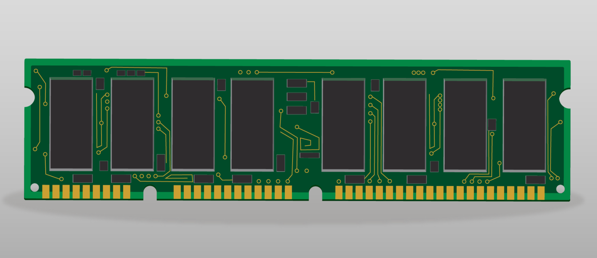

Memoria RAM
►Concepto
La memoria RAM es el componente de un dispositivo electrónico que se encarga de almacenar los datos e instrucciones de forma temporal. Por lo que cuando el dispositivo se apaga, los datos se borran.
←Volver
